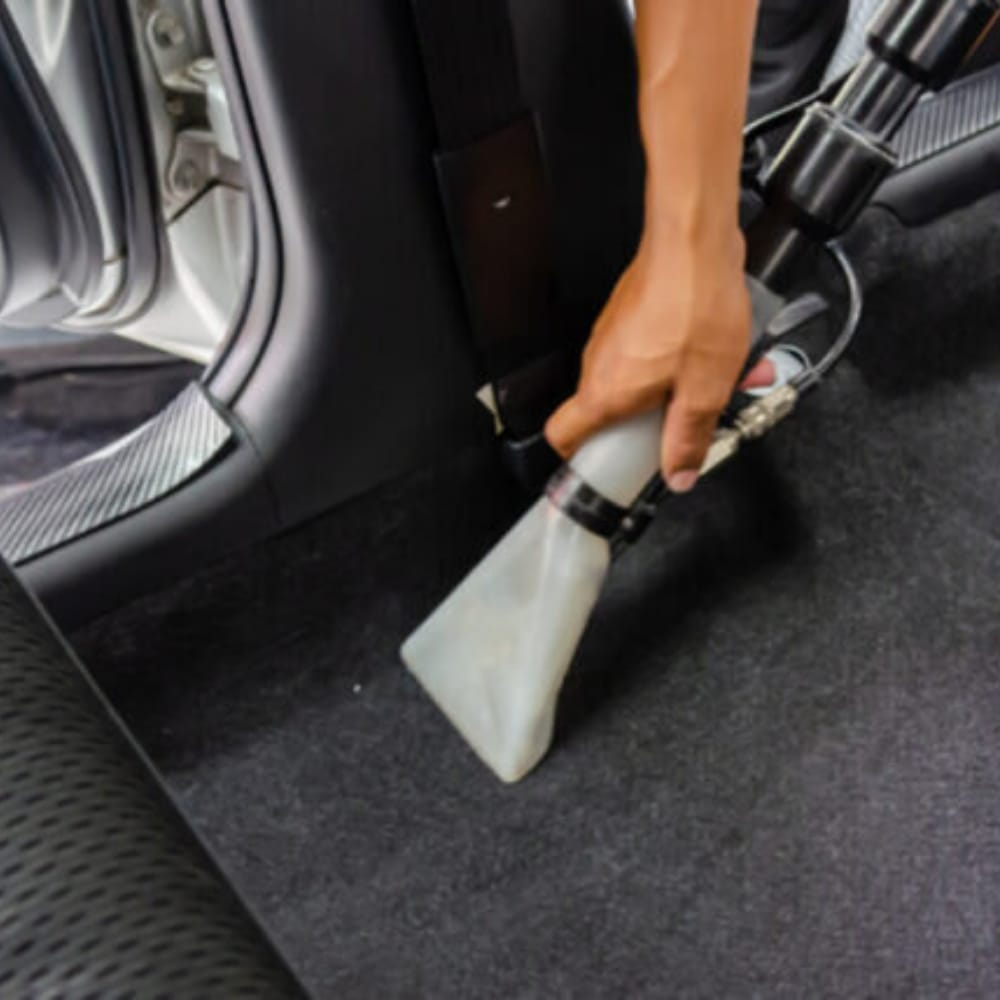

Higienização do Carpete
R$ 200,00Serviços realizados:
- Limpeza e desinfecção do carpete.
- Remoção de manchas, chiclete, graxa e óleo.
- Alvejamento do tecido (restaura a cor).
Também está incluso:
- Limpeza germicida dos plásticos.
- Aplicação de revitalizador nos plásticos.
- Aspiração do porta-malas, carpete e bancos.
- Limpeza dos vidros com produto antiembaçamento.